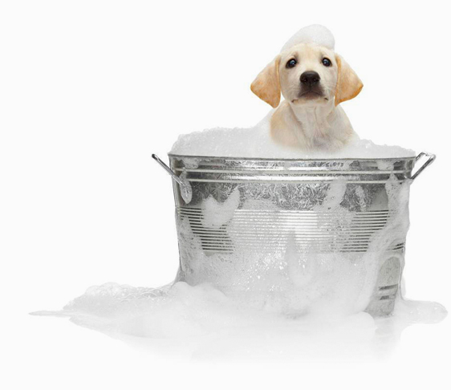
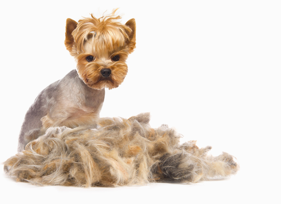
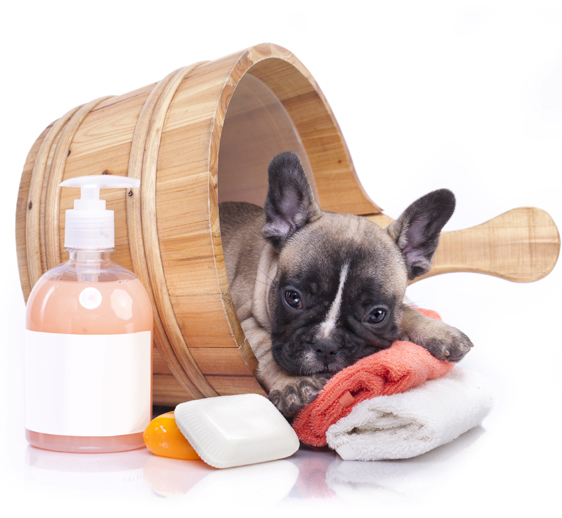

|
|
|
|
|
|
|
Baño Con agua tibia, masaje durante el baño con aceite de lavanda, shampoo hipoalergénico y aceite de maleleuca 100% natural, el cual funciona como antipulgas y previene infecciones en la piel, utilizamos una mezcla patentada de aceites esenciales extremadamente potentes a base de hierbas (limón, eucalipto y citronella) todas ellas funcionando como un excelente repelente natural,es seguro de usar y huele muy bien. |
 |
|
Cepillado de Dientes:
Limpieza dental mejora un 100% la ccalidad de vida de su mascota y previene la caída de dientes, mal aliento, gingivitis, dolor e inflamación de las encías. |
Limpieza de oídos:
Ayuda al equilibrio, evita dolores de cabeza y estimula el que escuchen bien. |
Limpieza de lagrimales:
Evita infecciones. |
Limpieza de glándulas anales:
Nuestras mascotas no se limpian al obrar, y van acumulando residuos que les provocan comezón, es importante exprimir al igual que desparasitar y con esto evitamos el llamado caminar de cola. |
Corte de uñas:
Se cortan y se liman evitando que se acumule suciedad y que no haya rasguños al jugar con nuestras marcotas. |
|  |
Pelo Rasurado:Ideal para la época de calor, nuestra mascota se sentirá más libre. Corte Estético: según la raza. |
|
Spa Nuestras mascotas también sufren de estrés por diferentes motivos, la falta de paseo y el que usted este lejos los derprime, es muy importante aplicar una sesión de aromaterapia, acompañada de un masaje relajante con aceites 100% naturalesl, consienta a su mascota, esto mejorará su temperamento. |
 |